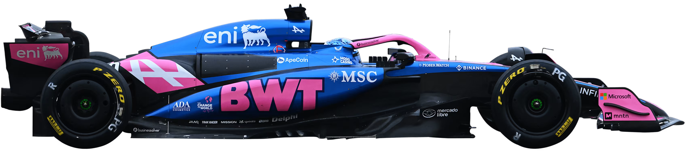
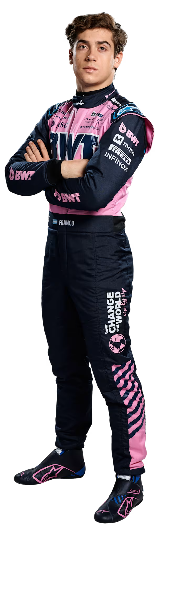
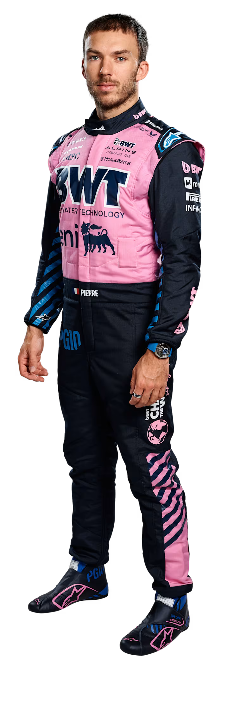

A Alpine pode ser um nome relativamente novo na Fórmula 1, mas a famosa divisão de carros desportivos da Renault tem uma longa herança no automobilismo. A reformulação da equipa em 2021 marcou o próximo passo no renascimento da Renault na F1, iniciado em 2016 com a aquisição da então equipa Lotus. Já vencedora de corridas sob o novo nome, o próximo objetivo deve ser garantir pódios regulares e lutar pelo título…